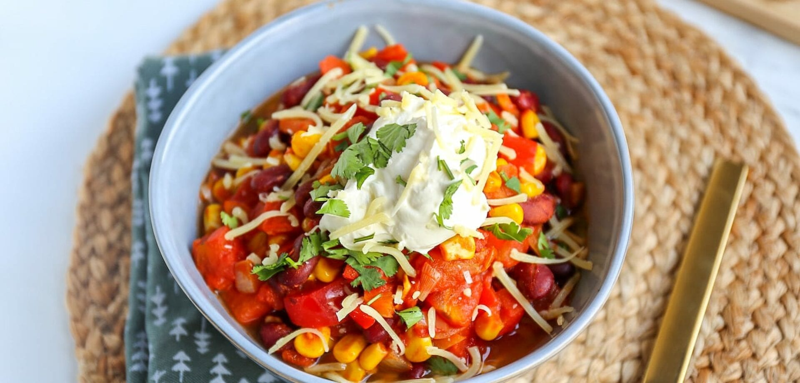

Chili sin carne

Ingrediënten
- 1 grote ui
- halve rode peper
- 2 paprika's
- 2 teentjes knoflook
- 1 blik tomatenblokjes
- 1 blik kidneybonen
- 100 gr mais
- 1 tl komijnpoeder
- halve tl kaneel
- 1 tl paprikapoeder
- verse koriander
Bereiding
- Snipper als eerste het uitje. Snijd de knoflook fijn, de paprika in blokjes en de halve rode peper in kleine stukjes. Doe vervolgens een scheutje olie in een hapjes pan en fruit de ui samen met de knoflook aan. Voeg na ongeveer 3 minuten de paprika en rode peper toe samen met de kruiden.
- Bak dit al roeren een minuut of twee mee. Voeg dan de tomatenblokjes toe.
- Ga je dit gerecht met rijst serveren? Dan is dit het moment om de rijst te koken. Doe dit volgens de instructies op de verpakking. De chili sin carne is ook erg lekker op een broodje of in een wrap.
- Laat de kidneybonen uitlekken en spoel ze eventueel nog even schoon. Ook de mais laten we even uitlekken. Voeg dan de kidneybonen en mais toe aan de pan en laat de chili nu heel zachtjes pruttelen totdat de rijst klaar is. Serveer de chili sin carne met wat verse koriander en eventueel nog wat zelfgemaakte guacamole en een schepje zure room. Eet smakelijk!